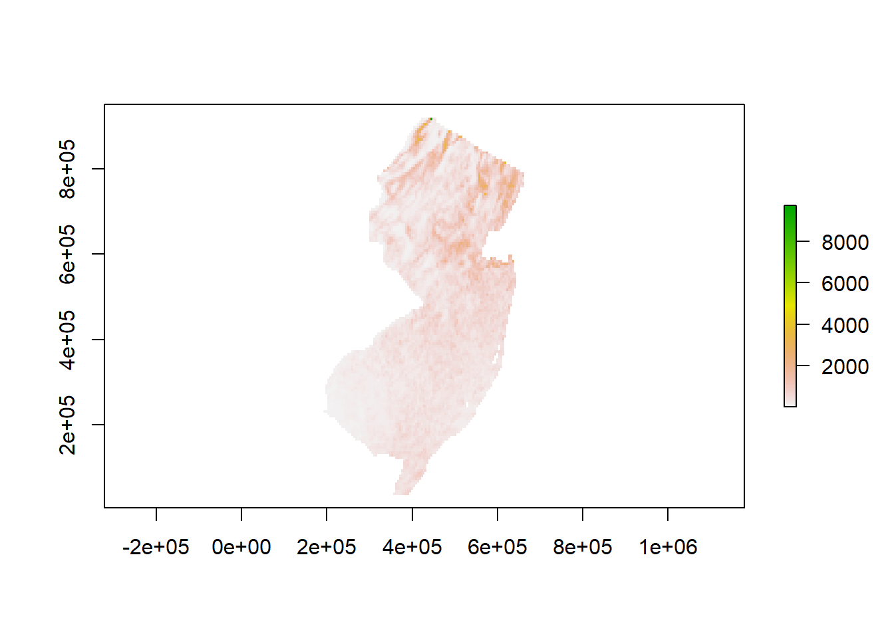
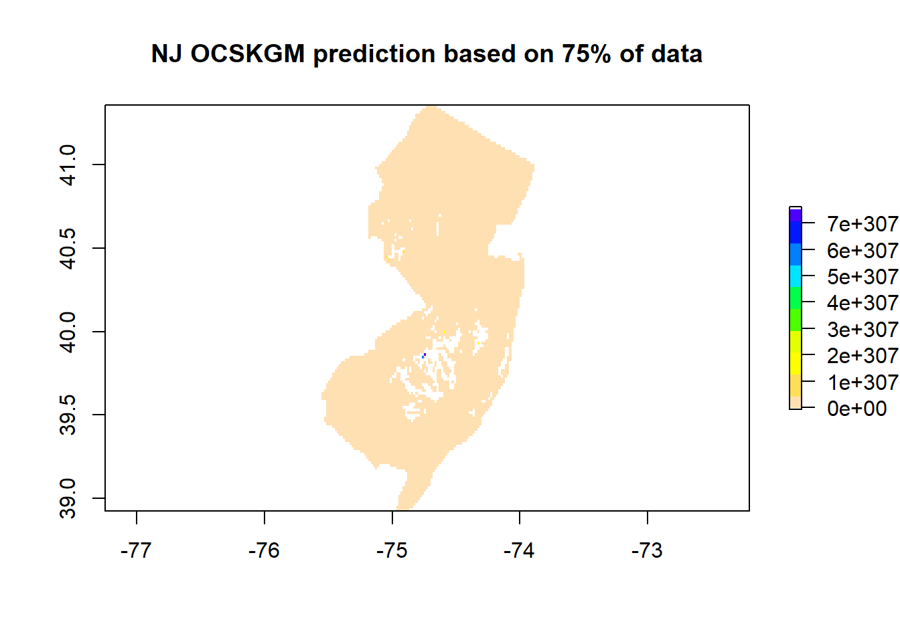

Chapter 6 Regression-Kriging
6.1 Data preparation
We previously prepared the point dataset “nj.SOC” in chapter 5. We will be using this data file in this section.
Environmental predictors (covariates).
In the Chapter 4, we presented and prepared several global and climatic datasets. In addition to these datasets, numerous covariate layers have been prepared
```{r setup, include=FALSE}
# explore the data structure
nj.SOC <- read.csv("C/../LOCATION/File_Name.csv")
# Read in covariates
files <- list.files(Directory, pattern = '.tif$', full.names = TRUE)
covs <- stack(files)
```## 'data.frame': 188 obs. of 26 variables:
## $ X.1 : int 1 2 3 4 5 6 7 8 9 10 ...
## $ id : chr "C1201C061" "C1201C062" "C1201C063" "C1201C064" ...
## $ X : num -75 -75 -75 -75 -75 ...
## $ Y : num 41 41 41 41 41 ...
## $ SOC : num 90 58.4 39.7 67.2 55.3 ...
## $ CRFVOL : num 9.34 3.97 4.84 6.97 5.97 ...
## $ OCSKGM : num 4.5 4.07 3.68 4.21 4.01 ...
## $ annualPET : num 1009 1009 1009 1009 1009 ...
## $ aridityIndexThornthwaite: num 28.4 28.4 28.4 28.4 28.4 ...
## $ climaticMoistureIndex : num 0.0128 0.0128 0.0128 0.0128 0.0128 ...
## $ continentality : num 25.2 25.2 25.2 25.2 25.2 ...
## $ embergerQ : num 105 105 105 105 105 ...
## $ growingDegDays0 : num 5011 5011 5011 5011 5011 ...
## $ growingDegDays5 : num 3409 3409 3409 3409 3409 ...
## $ maxTempColdest : num 5.07 5.07 5.07 5.07 5.07 ...
## $ meanTempColdest : num 1.2 1.2 1.2 1.2 1.2 ...
## $ meanTempWarmest : num 26.4 26.4 26.4 26.4 26.4 ...
## $ minTempWarmest : num 21.5 21.5 21.5 21.5 21.5 ...
## $ monthCountByTemp10 : int 7 7 7 7 7 7 7 7 7 7 ...
## $ PETColdestQuarter : num 24.9 24.9 24.9 24.9 24.9 ...
## $ PETDriestQuarter : num 36.8 36.8 36.8 36.8 36.8 ...
## $ PETseasonality : num 5257 5257 5257 5257 5257 ...
## $ PETWarmestQuarter : num 151 151 151 151 151 ...
## $ PETWettestQuarter : num 148 148 148 148 148 ...
## $ thermicityIndex : num 238 238 238 238 238 ...
## $ optional : logi TRUE TRUE TRUE TRUE TRUE TRUE ...## [1] "SpatialPointsDataFrame"
## attr(,"package")
## [1] "sp"nj.SOC@proj4string <- CRS(projargs = "+proj=longlat +datum=WGS84")
# Get the covariates names
library(raster)
covs <- stack(files)
names(covs)## [1] "annualPET" "aridityIndexThornthwaite"
## [3] "climaticMoistureIndex" "continentality"
## [5] "embergerQ" "growingDegDays0"
## [7] "growingDegDays5" "maxTempColdest"
## [9] "meanTempColdest" "meanTempWarmest"
## [11] "minTempWarmest" "monthCountByTemp10"
## [13] "PETColdestQuarter" "PETDriestQuarter"
## [15] "PETseasonality" "PETWarmestQuarter"
## [17] "PETWettestQuarter" "thermicityIndex"6.2 Regression Model
# Fit a multiple linear regression model between the log transformed Organic C column
model.MLR <- lm(OCSKGM ~ ., data = df.njSOC)
summary(model.MLR)##
## Call:
## lm(formula = OCSKGM ~ ., data = df.njSOC)
##
## Residuals:
## Min 1Q Median 3Q Max
## -2.11649 -0.57886 0.00208 0.66902 1.30325
##
## Coefficients: (1 not defined because of singularities)
## Estimate Std. Error t value Pr(>|t|)
## (Intercept) 3.837e+02 1.015e+03 0.378 0.70593
## annualPET -3.000e-01 1.831e-01 -1.639 0.10316
## aridityIndexThornthwaite -4.814e-02 4.468e-02 -1.078 0.28274
## climaticMoistureIndex 6.083e+01 1.506e+01 4.040 8.08e-05 ***
## continentality -1.573e+01 5.587e+01 -0.282 0.77863
## embergerQ -3.450e-01 8.400e-02 -4.107 6.23e-05 ***
## growingDegDays0 -1.292e-01 9.024e-02 -1.432 0.15395
## growingDegDays5 2.738e-02 2.436e-02 1.124 0.26262
## maxTempColdest -2.336e+00 4.856e+00 -0.481 0.63110
## meanTempColdest -7.621e+00 7.508e+01 -0.102 0.91927
## meanTempWarmest NA NA NA NA
## minTempWarmest 1.087e+01 5.547e+00 1.959 0.05173 .
## monthCountByTemp10 -5.568e-02 3.527e-01 -0.158 0.87473
## PETColdestQuarter 7.758e+00 3.466e+00 2.238 0.02650 *
## PETDriestQuarter 1.282e-02 1.230e-02 1.043 0.29850
## PETseasonality 1.308e-01 4.725e-02 2.768 0.00627 **
## PETWarmestQuarter -3.211e+00 1.507e+00 -2.131 0.03453 *
## PETWettestQuarter -9.291e-04 1.075e-02 -0.086 0.93124
## thermicityIndex 1.260e+00 3.299e+00 0.382 0.70291
## ---
## Signif. codes: 0 '***' 0.001 '**' 0.01 '*' 0.05 '.' 0.1 ' ' 1
##
## Residual standard error: 0.8334 on 170 degrees of freedom
## Multiple R-squared: 0.3795, Adjusted R-squared: 0.3174
## F-statistic: 6.116 on 17 and 170 DF, p-value: 5.948e-11
```{r setup, include=FALSE}
### From the summary of our fitted model (model.MLR) above, it seems only a few of the covariates are significant in describing
### the spatial variation of the target variable. To determine the most predictive model we can run a stepwise regression using
### the step() function. With this function, we can also specify the mode of stepwise search, can be one of both, backward, or foreward.
```6.3 stepwise variable selection
# Removes all Covs not contributing to the model
model.MLR.step <- step(model.MLR, direction="both")## Start: AIC=-51.45
## OCSKGM ~ annualPET + aridityIndexThornthwaite + climaticMoistureIndex +
## continentality + embergerQ + growingDegDays0 + growingDegDays5 +
## maxTempColdest + meanTempColdest + meanTempWarmest + minTempWarmest +
## monthCountByTemp10 + PETColdestQuarter + PETDriestQuarter +
## PETseasonality + PETWarmestQuarter + PETWettestQuarter +
## thermicityIndex
##
##
## Step: AIC=-51.45
## OCSKGM ~ annualPET + aridityIndexThornthwaite + climaticMoistureIndex +
## continentality + embergerQ + growingDegDays0 + growingDegDays5 +
## maxTempColdest + meanTempColdest + minTempWarmest + monthCountByTemp10 +
## PETColdestQuarter + PETDriestQuarter + PETseasonality + PETWarmestQuarter +
## PETWettestQuarter + thermicityIndex
##
## Df Sum of Sq RSS AIC
## - PETWettestQuarter 1 0.0052 118.08 -53.444
## - meanTempColdest 1 0.0072 118.08 -53.440
## - monthCountByTemp10 1 0.0173 118.09 -53.424
## - continentality 1 0.0551 118.12 -53.364
## - thermicityIndex 1 0.1014 118.17 -53.290
## - maxTempColdest 1 0.1607 118.23 -53.196
## - PETDriestQuarter 1 0.7553 118.83 -52.253
## - aridityIndexThornthwaite 1 0.8065 118.88 -52.172
## - growingDegDays5 1 0.8774 118.95 -52.060
## <none> 118.07 -51.452
## - growingDegDays0 1 1.4244 119.49 -51.197
## - annualPET 1 1.8647 119.93 -50.506
## - minTempWarmest 1 2.6659 120.73 -49.254
## - PETWarmestQuarter 1 3.1538 121.22 -48.496
## - PETColdestQuarter 1 3.4795 121.55 -47.992
## - PETseasonality 1 5.3203 123.39 -45.166
## - climaticMoistureIndex 1 11.3357 129.41 -36.217
## - embergerQ 1 11.7123 129.78 -35.671
##
## Step: AIC=-53.44
## OCSKGM ~ annualPET + aridityIndexThornthwaite + climaticMoistureIndex +
## continentality + embergerQ + growingDegDays0 + growingDegDays5 +
## maxTempColdest + meanTempColdest + minTempWarmest + monthCountByTemp10 +
## PETColdestQuarter + PETDriestQuarter + PETseasonality + PETWarmestQuarter +
## thermicityIndex
##
## Df Sum of Sq RSS AIC
## - meanTempColdest 1 0.0100 118.08 -55.428
## - monthCountByTemp10 1 0.0153 118.09 -55.419
## - continentality 1 0.0633 118.14 -55.343
## - thermicityIndex 1 0.1129 118.19 -55.264
## - maxTempColdest 1 0.1682 118.24 -55.176
## - PETDriestQuarter 1 0.7613 118.84 -54.235
## - aridityIndexThornthwaite 1 0.8933 118.97 -54.027
## - growingDegDays5 1 0.9277 119.00 -53.972
## <none> 118.08 -53.444
## - growingDegDays0 1 1.4860 119.56 -53.092
## - annualPET 1 1.8620 119.94 -52.502
## + PETWettestQuarter 1 0.0052 118.07 -51.452
## - minTempWarmest 1 2.6646 120.74 -51.248
## - PETWarmestQuarter 1 3.2258 121.30 -50.376
## - PETColdestQuarter 1 3.4854 121.56 -49.974
## - PETseasonality 1 5.3806 123.45 -47.066
## - climaticMoistureIndex 1 11.4877 129.56 -37.989
## - embergerQ 1 11.7715 129.85 -37.577
##
## Step: AIC=-55.43
## OCSKGM ~ annualPET + aridityIndexThornthwaite + climaticMoistureIndex +
## continentality + embergerQ + growingDegDays0 + growingDegDays5 +
## maxTempColdest + minTempWarmest + monthCountByTemp10 + PETColdestQuarter +
## PETDriestQuarter + PETseasonality + PETWarmestQuarter + thermicityIndex
##
## Df Sum of Sq RSS AIC
## - monthCountByTemp10 1 0.0259 118.11 -57.386
## - maxTempColdest 1 0.1789 118.26 -57.143
## - PETDriestQuarter 1 0.8219 118.91 -56.124
## - growingDegDays5 1 0.9358 119.02 -55.944
## <none> 118.08 -55.428
## - aridityIndexThornthwaite 1 1.3911 119.48 -55.226
## - thermicityIndex 1 1.9099 120.00 -54.411
## - annualPET 1 2.1336 120.22 -54.061
## + meanTempWarmest 1 0.0102 118.07 -53.444
## + meanTempColdest 1 0.0100 118.08 -53.444
## + PETWettestQuarter 1 0.0080 118.08 -53.440
## - continentality 1 2.9664 121.05 -52.763
## - PETWarmestQuarter 1 3.2463 121.33 -52.329
## - minTempWarmest 1 3.5947 121.68 -51.790
## - PETColdestQuarter 1 4.3626 122.45 -50.607
## - growingDegDays0 1 5.3256 123.41 -49.134
## - PETseasonality 1 6.1650 124.25 -47.860
## - embergerQ 1 15.9605 134.04 -33.594
## - climaticMoistureIndex 1 16.1546 134.24 -33.322
##
## Step: AIC=-57.39
## OCSKGM ~ annualPET + aridityIndexThornthwaite + climaticMoistureIndex +
## continentality + embergerQ + growingDegDays0 + growingDegDays5 +
## maxTempColdest + minTempWarmest + PETColdestQuarter + PETDriestQuarter +
## PETseasonality + PETWarmestQuarter + thermicityIndex
##
## Df Sum of Sq RSS AIC
## - maxTempColdest 1 0.1895 118.30 -59.085
## - PETDriestQuarter 1 0.8719 118.98 -58.003
## - growingDegDays5 1 0.9146 119.03 -57.936
## <none> 118.11 -57.386
## - aridityIndexThornthwaite 1 1.4285 119.54 -57.126
## - thermicityIndex 1 1.9696 120.08 -56.277
## - annualPET 1 2.1676 120.28 -55.967
## + monthCountByTemp10 1 0.0259 118.08 -55.428
## + meanTempWarmest 1 0.0209 118.09 -55.420
## + meanTempColdest 1 0.0207 118.09 -55.419
## + PETWettestQuarter 1 0.0061 118.10 -55.396
## - continentality 1 2.9760 121.09 -54.708
## - PETWarmestQuarter 1 3.4228 121.53 -54.016
## - minTempWarmest 1 3.7489 121.86 -53.512
## - PETColdestQuarter 1 4.4139 122.52 -52.489
## - growingDegDays0 1 5.2999 123.41 -51.134
## - PETseasonality 1 6.1502 124.26 -49.843
## - embergerQ 1 16.1772 134.29 -35.254
## - climaticMoistureIndex 1 16.2961 134.41 -35.088
##
## Step: AIC=-59.08
## OCSKGM ~ annualPET + aridityIndexThornthwaite + climaticMoistureIndex +
## continentality + embergerQ + growingDegDays0 + growingDegDays5 +
## minTempWarmest + PETColdestQuarter + PETDriestQuarter + PETseasonality +
## PETWarmestQuarter + thermicityIndex
##
## Df Sum of Sq RSS AIC
## - growingDegDays5 1 0.8067 119.11 -59.807
## - PETDriestQuarter 1 0.9946 119.30 -59.511
## <none> 118.30 -59.085
## - aridityIndexThornthwaite 1 1.6688 119.97 -58.451
## - thermicityIndex 1 1.8634 120.16 -58.147
## + maxTempColdest 1 0.1895 118.11 -57.386
## - annualPET 1 2.4058 120.71 -57.300
## + meanTempWarmest 1 0.0385 118.26 -57.146
## + meanTempColdest 1 0.0382 118.26 -57.146
## + monthCountByTemp10 1 0.0365 118.26 -57.143
## + PETWettestQuarter 1 0.0122 118.29 -57.104
## - PETWarmestQuarter 1 3.2530 121.55 -55.985
## - continentality 1 3.5529 121.85 -55.522
## - minTempWarmest 1 3.8799 122.18 -55.018
## - PETColdestQuarter 1 4.3766 122.68 -54.255
## - growingDegDays0 1 5.1883 123.49 -53.016
## - PETseasonality 1 5.9946 124.30 -51.792
## - embergerQ 1 17.1037 135.40 -35.698
## - climaticMoistureIndex 1 17.8049 136.10 -34.727
##
## Step: AIC=-59.81
## OCSKGM ~ annualPET + aridityIndexThornthwaite + climaticMoistureIndex +
## continentality + embergerQ + growingDegDays0 + minTempWarmest +
## PETColdestQuarter + PETDriestQuarter + PETseasonality + PETWarmestQuarter +
## thermicityIndex
##
## Df Sum of Sq RSS AIC
## <none> 119.11 -59.807
## - thermicityIndex 1 1.4518 120.56 -59.530
## + growingDegDays5 1 0.8067 118.30 -59.085
## - PETDriestQuarter 1 1.7524 120.86 -59.061
## - aridityIndexThornthwaite 1 1.9691 121.08 -58.725
## + maxTempColdest 1 0.0815 119.03 -57.936
## - annualPET 1 2.4902 121.60 -57.917
## + monthCountByTemp10 1 0.0088 119.10 -57.821
## + PETWettestQuarter 1 0.0038 119.10 -57.813
## + meanTempColdest 1 0.0035 119.10 -57.813
## + meanTempWarmest 1 0.0034 119.10 -57.813
## - continentality 1 2.9749 122.08 -57.169
## - PETWarmestQuarter 1 3.2750 122.38 -56.708
## - minTempWarmest 1 3.7722 122.88 -55.946
## - growingDegDays0 1 4.6166 123.72 -54.658
## - PETColdestQuarter 1 5.6741 124.78 -53.058
## - PETseasonality 1 5.7587 124.86 -52.931
## - embergerQ 1 17.1172 136.22 -36.563
## - climaticMoistureIndex 1 17.2417 136.35 -36.391# summary of the new model using stepwise covariates
#### R-squared = the percentage of variation in the response that is explained by the model
summary(model.MLR.step)##
## Call:
## lm(formula = OCSKGM ~ annualPET + aridityIndexThornthwaite +
## climaticMoistureIndex + continentality + embergerQ + growingDegDays0 +
## minTempWarmest + PETColdestQuarter + PETDriestQuarter + PETseasonality +
## PETWarmestQuarter + thermicityIndex, data = df.njSOC)
##
## Residuals:
## Min 1Q Median 3Q Max
## -2.1274 -0.5679 0.0166 0.6670 1.2877
##
## Coefficients:
## Estimate Std. Error t value Pr(>|t|)
## (Intercept) 162.16491 121.44143 1.335 0.18350
## annualPET -0.29871 0.15617 -1.913 0.05741 .
## aridityIndexThornthwaite -0.05716 0.03360 -1.701 0.09073 .
## climaticMoistureIndex 55.84604 11.09561 5.033 1.19e-06 ***
## continentality -5.74454 2.74770 -2.091 0.03800 *
## embergerQ -0.32494 0.06479 -5.015 1.29e-06 ***
## growingDegDays0 -0.08812 0.03383 -2.604 0.00999 **
## minTempWarmest 10.19720 4.33144 2.354 0.01967 *
## PETColdestQuarter 8.14227 2.81998 2.887 0.00438 **
## PETDriestQuarter 0.01767 0.01101 1.605 0.11038
## PETseasonality 0.12364 0.04251 2.909 0.00410 **
## PETWarmestQuarter -3.13203 1.42780 -2.194 0.02958 *
## thermicityIndex 0.68525 0.46919 1.460 0.14595
## ---
## Signif. codes: 0 '***' 0.001 '**' 0.01 '*' 0.05 '.' 0.1 ' ' 1
##
## Residual standard error: 0.825 on 175 degrees of freedom
## Multiple R-squared: 0.374, Adjusted R-squared: 0.3311
## F-statistic: 8.714 on 12 and 175 DF, p-value: 6.435e-13## Analysis of Variance Table
##
## Response: OCSKGM
## Df Sum Sq Mean Sq F value Pr(>F)
## annualPET 1 9.886 9.8857 14.5247 0.0001914 ***
## aridityIndexThornthwaite 1 7.852 7.8519 11.5365 0.0008446 ***
## climaticMoistureIndex 1 0.532 0.5319 0.7815 0.3778988
## continentality 1 2.516 2.5159 3.6965 0.0561517 .
## embergerQ 1 14.322 14.3216 21.0423 8.535e-06 ***
## growingDegDays0 1 4.863 4.8629 7.1450 0.0082284 **
## minTempWarmest 1 9.643 9.6430 14.1681 0.0002280 ***
## PETColdestQuarter 1 6.799 6.7987 9.9891 0.0018559 **
## PETDriestQuarter 1 0.003 0.0033 0.0049 0.9442051
## PETseasonality 1 7.695 7.6947 11.3055 0.0009491 ***
## PETWarmestQuarter 1 5.610 5.6097 8.2421 0.0045983 **
## thermicityIndex 1 1.452 1.4518 2.1330 0.1459499
## Residuals 175 119.107 0.6806
## ---
## Signif. codes: 0 '***' 0.001 '**' 0.01 '*' 0.05 '.' 0.1 ' ' 16.4 Model Validation: graphical diagnosis of the regression analysis
6.4.0.2 # 2 collinearity test using variance inflation factors
## annualPET aridityIndexThornthwaite climaticMoistureIndex
## 3.351686e+04 5.754784e+00 1.690369e+02
## continentality embergerQ growingDegDays0
## 1.783024e+03 1.249914e+02 2.920590e+04
## minTempWarmest PETColdestQuarter PETDriestQuarter
## 6.608803e+03 2.787411e+03 5.913802e+00
## PETseasonality PETWarmestQuarter thermicityIndex
## 1.542816e+05 9.423751e+04 3.230792e+04## annualPET aridityIndexThornthwaite climaticMoistureIndex
## 183.076112 2.398913 13.001418
## continentality embergerQ growingDegDays0
## 42.225864 11.179955 170.897342
## minTempWarmest PETColdestQuarter PETDriestQuarter
## 81.294548 52.795935 2.431831
## PETseasonality PETWarmestQuarter thermicityIndex
## 392.786982 306.981290 179.744053# Removing PETseasonality from the stepwise model
model.MLR.step <- update(model.MLR.step, . ~ . - PETseasonality)
# Test the vif again
sqrt(vif(model.MLR.step))## annualPET aridityIndexThornthwaite climaticMoistureIndex
## 170.590749 2.398483 12.980826
## continentality embergerQ growingDegDays0
## 35.403687 11.158751 160.965534
## minTempWarmest PETColdestQuarter PETDriestQuarter
## 68.470182 38.647413 2.421617
## PETWarmestQuarter thermicityIndex
## 131.611264 158.734649##
## Call:
## lm(formula = OCSKGM ~ annualPET + aridityIndexThornthwaite +
## climaticMoistureIndex + continentality + embergerQ + growingDegDays0 +
## minTempWarmest + PETColdestQuarter + PETDriestQuarter + PETWarmestQuarter +
## thermicityIndex, data = df.njSOC)
##
## Residuals:
## Min 1Q Median 3Q Max
## -2.2260 -0.5354 0.0597 0.7071 1.3150
##
## Coefficients:
## Estimate Std. Error t value Pr(>|t|)
## (Intercept) 269.69900 118.10430 2.284 0.023592 *
## annualPET -0.13383 0.14857 -0.901 0.368918
## aridityIndexThornthwaite -0.05531 0.03430 -1.612 0.108684
## climaticMoistureIndex 57.66183 11.31041 5.098 8.80e-07 ***
## continentality -1.38861 2.35210 -0.590 0.555698
## embergerQ -0.33654 0.06603 -5.097 8.85e-07 ***
## growingDegDays0 -0.12118 0.03254 -3.724 0.000263 ***
## minTempWarmest 3.40504 3.72467 0.914 0.361871
## PETColdestQuarter 2.55382 2.10757 1.212 0.227237
## PETDriestQuarter 0.02060 0.01119 1.840 0.067420 .
## PETWarmestQuarter 0.62009 0.62498 0.992 0.322467
## thermicityIndex 1.32555 0.42304 3.133 0.002025 **
## ---
## Signif. codes: 0 '***' 0.001 '**' 0.01 '*' 0.05 '.' 0.1 ' ' 1
##
## Residual standard error: 0.8423 on 176 degrees of freedom
## Multiple R-squared: 0.3438, Adjusted R-squared: 0.3028
## F-statistic: 8.382 on 11 and 176 DF, p-value: 8.878e-12## No Studentized residuals with Bonferroni p < 0.05
## Largest |rstudent|:
## rstudent unadjusted p-value Bonferroni p
## 161 -2.784766 0.0059465 NA## No Studentized residuals with Bonferroni p < 0.05
## Largest |rstudent|:
## rstudent unadjusted p-value Bonferroni p
## 161 -2.784766 0.0059465 NA6.5 Prediction and residual kriging
coordinates(nj.SOC) <- ~ X + Y
# Project point data
nj.SOC@proj4string <- CRS(projargs = "+init=epsg:3424")
# Project covariates to WGS84
covs <- projectRaster(covs, crs = CRS("+init=epsg:3424"))```{r setup, include=FALSE}
# RK model
# Run regression-kriging prediction.
# This step can take hours!
OCS.krige <- autoKrige(formula =
as.formula(model.MLR.step$call$formula),
input_data = nj.SOC,
new_data = covs.sp,
verbose = TRUE,
block = c(1000, 1000))
```# Convert prediction and standard deviation to rasters and back-tansform the vlaues
RKprediction <- exp(raster(OCS.krige$krige_output[1]))
RKpredsd <- exp(raster(OCS.krige$krige_output[3])) SOC prediction of NJ RCAP using a regression kriging model
 Standard deviation map of the regression-kriging model
6.6 Cross-validation of regression-kriging models
we will apply 10 fold cross-validation to our RK model.
# autoKrige.cv() does not removes the duplicated points
# We have to do it manually before running the cross-validation
nj.SOC = nj.SOC[which(!duplicated(nj.SOC@coords)), ]
OCS.krige.cv <- autoKrige.cv(formula =
as.formula(model.MLR.step$call$formula),
input_data = nj.SOC, nfold = 10)## [,1]
## mean_error 0.05008
## me_mean 0.008716
## MAE 0.8521
## MSE 1.162
## MSNE 0.8267
## cor_obspred 0.3225
## cor_predres -0.558
## RMSE 1.078
## RMSE_sd 1.127
## URMSE 1.077
## iqr 1.263